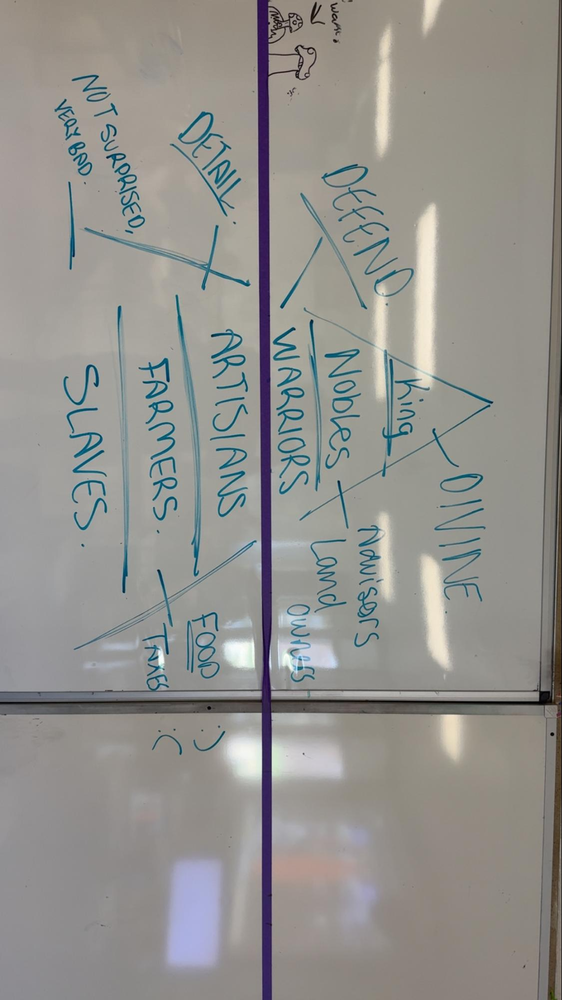

While explaining and modeling content, it is very important to help students draw connections to content they might have learned about in the past or something interesting to them. This artifact displays a social hierarchy system that my class was working on during our Ancient China Unit. We were making the caste system together as a class on the whiteboard, and students gave reactions, and did research on each level to display what the jobs of each level were. As I modelled the drawing on the whiteboard, students were encouraged to make their own in their notebooks along with the class. We used information from our book to describe each different level's role in society, and students then connected this caste system in ancient China to the one we had previously made for ancient Japan.